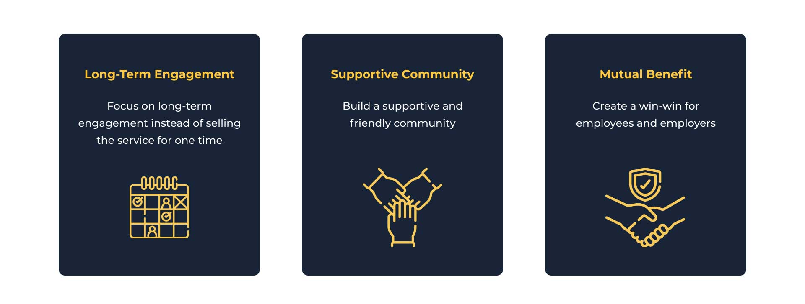
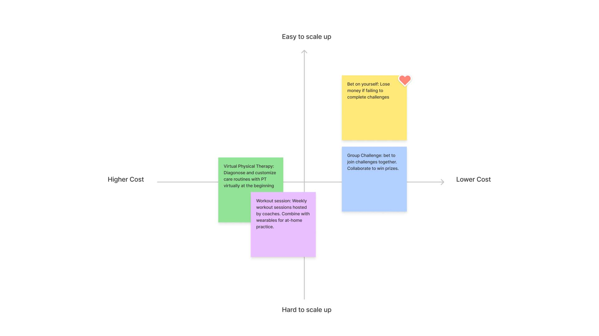
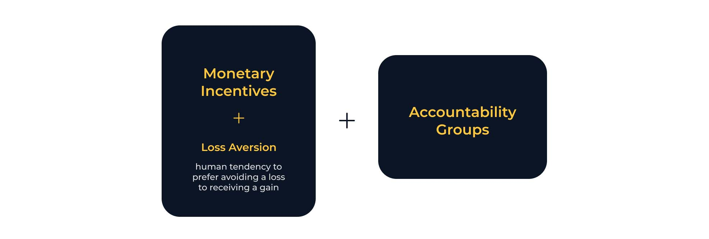
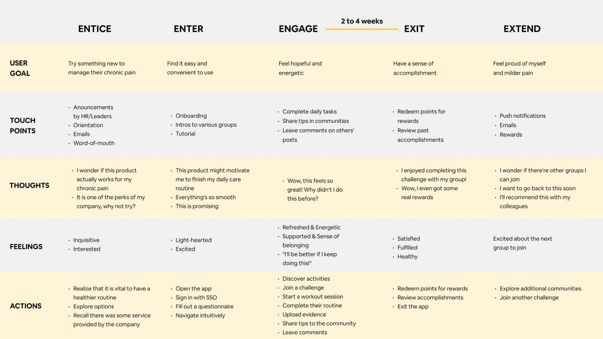
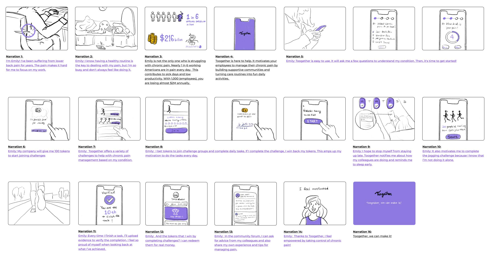
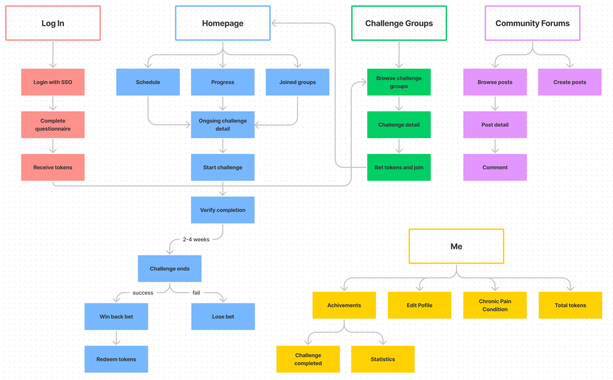

TOOGETHER
Product Design & Strategy · 2021
Overview
Toogether is a project sponsored by Johnson & Johnson. My team designed a mobile app for companies to motivate their employees to manage chronic pain by building supportive communities and turning care routines into fun daily activities.
Achievement: Winner of Strategic Innovation in Product/Service Design Case 2021
My Contributions
- Built design strategy and conceptualized new user behaviors.
- Created interactive mockups with ProtoPie.
- Pitched the design to our sponsor and produced a product concept video.
Duration
15 Weeks
My Role
Product Designer
Team
3 Product Designers
(Young Kim, Yazhen Zhang)
Tools
Figma
FigJam
ProtoPie
Adobe After Effects

Define the problem
Chronic pain severely impacts both individuals and businesses
We started with general research on chronic pain. Through desk research, we found that work-related chronic pain caused severe issues these years.
1/6
American workers suffer from
chronic pain every year
$216B
annual costs of chronic pain due to loss of productivity in the U.S.
We sensed great business opportunities in this area and decided to target on U.S. workers who have chronic pain. Below is our updated challenge statement.
User Interview Findings
What we learned from users?
- Instead of feeling anxious about their chronic pain, most people have been used to their pain after years.
- Most of them know the right ways of managing their pain (doing physical exercises, taking breaks frequently while working, having physical therapy regularly, etc.), but they lack motivation, especially when they are busy.
- A supportive atmosphere at work and accountability partners are helpful for chronic pain management.
Expert Interview
Current challenges of corporate wellness programs
We interviewed three experts to understand the challenges faced by workplace wellness programs and identified opportunities in the market. Here's what we learned from them.
- More companies are welling to adopt wellness programs.
- While most mid-to-large companies provide wellness programs to their employees, engagement in those programs is lower than 25%. Internal marketing is the biggest challenge even for Johnson & Johnson, the leader of workplace wellness.
- Reduction in sick leaves is the key measure of program success.
Design Principles
Developing three design principles
Based on our research findings, we developed three design principles to guide us through the design process. We believed that, by following the principles, we would create solutions that meet both user and business needs.
Design Strategy
Changing user behaviors by increasing motivation and feasibility
People usually don't take their chronic pain seriously until it gets unbearable. After they begin to develop healthy habits, their motivation goes up and down, keeping them from sticking to the care routine. When their pain improves, their motivation decreases, and they abandon the healthy routine.
How do we change user behavior? Higher motivation and higher feasibility lead to the success of behavior change. We aim to help users maintain high motivation through social and financial incentives and lower the activation threshold by increasing the feasibility of care routines.
Ideation
Applying monetary incentives and accountability groups
We came up with some solutions individually and came together to synthesize them into four ideas. To determine which direction to move forward with, we mapped them to a 2x2 matrix to see which one would be easy to scale up and have a low cost in comparison. The idea we chose was to increase users' motivation by gamifying their tedious care routines.
Our solution is a combination of monetary incentives and accountability groups. Specifically, based on chronic pain conditions, users join different accountability groups and take on corresponding challenges to complete daily health activities with their colleagues. Each challenge lasts for 2-4 weeks. They bet tokens when they join a group and earn back the bet if they complete the challenge
User journey
5Es user journey map
We created a 5Es journey map (entice, enter, engage, exit, and extend) to specify users' goals, actions and feelings at different stages of their experience.
User testing
Early testing with storyboards
We created a storyboard and presented it to four users to check if our solution appealed to them. They expressed disapproval of having employees bet their own money to join challenges and expected employers to pay more for employees' wellness. They were also concerned about privacy. Therefore, we decided to have employers pay their employees tokens to join challenges (employers would be willing to pay more as long as the ROI is positive) and anonymize users in community forums.
Design
User flow
Design